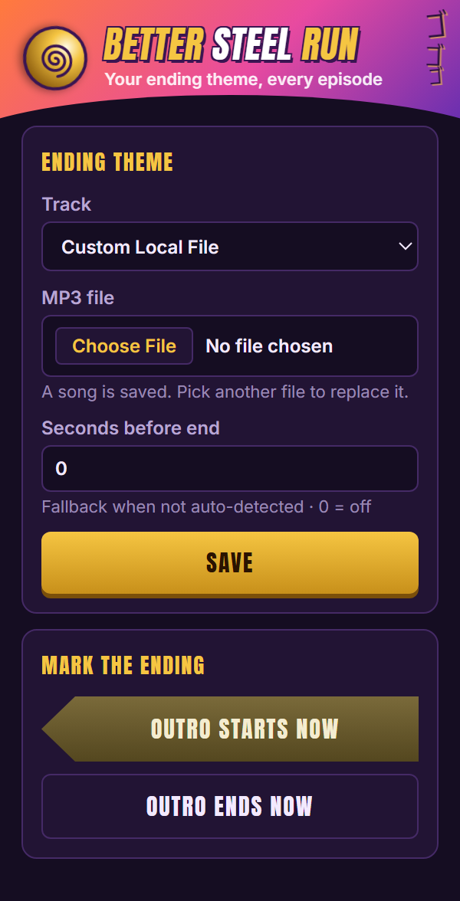
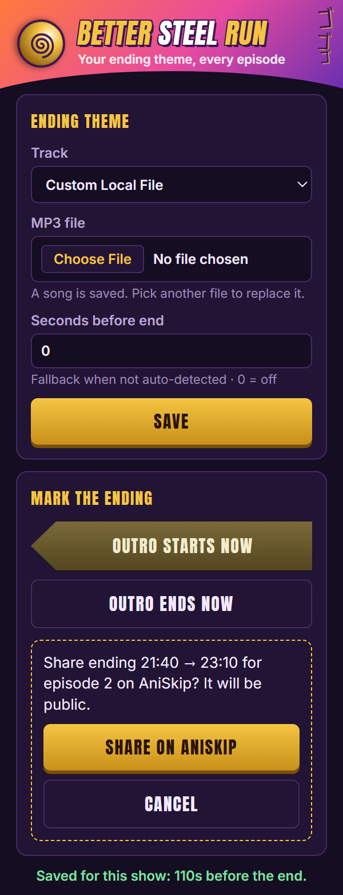

Swap the Steel Ball Run ending theme for the song of your choice, synced to the video.

No timestamps for an episode yet? Press Outro starts now when the ending begins, and it's remembered for the whole show.

Only Steel Ball Run episodes are touched. Everything else plays normally, and the original audio returns the moment the ending is over.
Community-voted ending time for the exact episode
Saved with "Outro starts now" for the show
A fixed number of seconds before the end